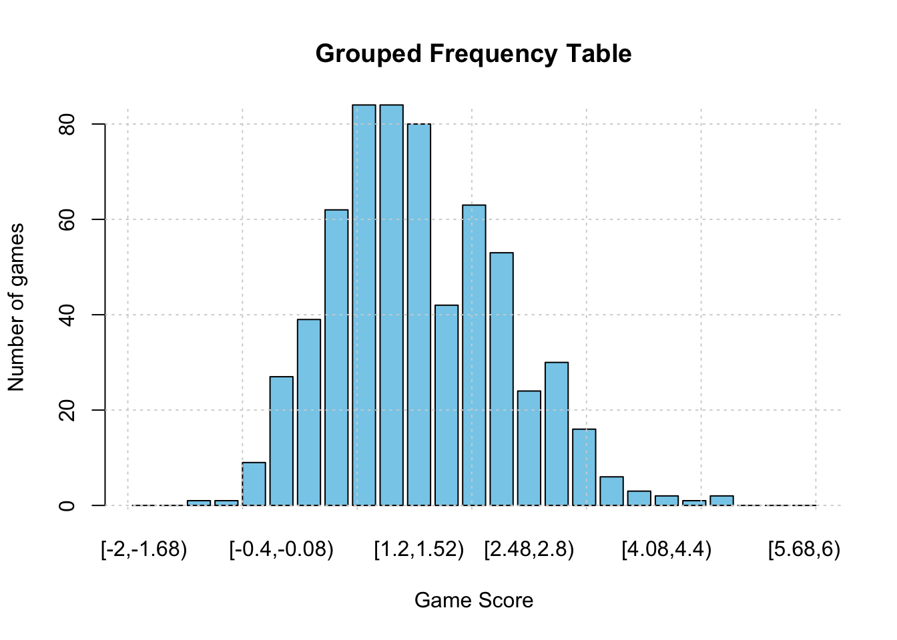
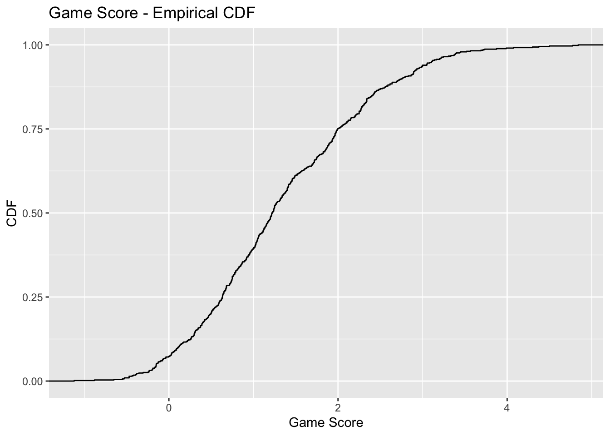
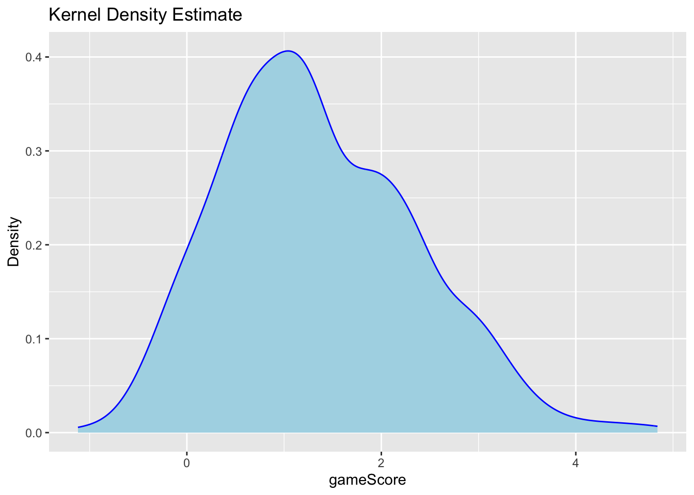
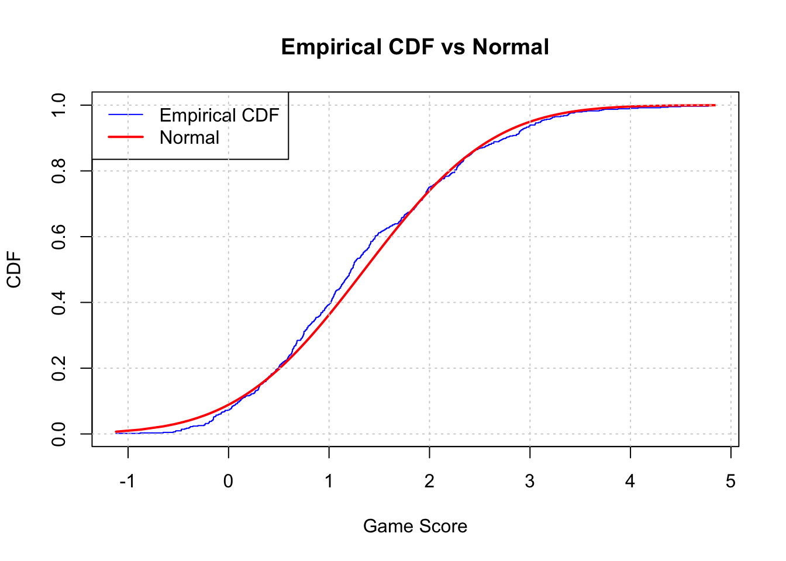
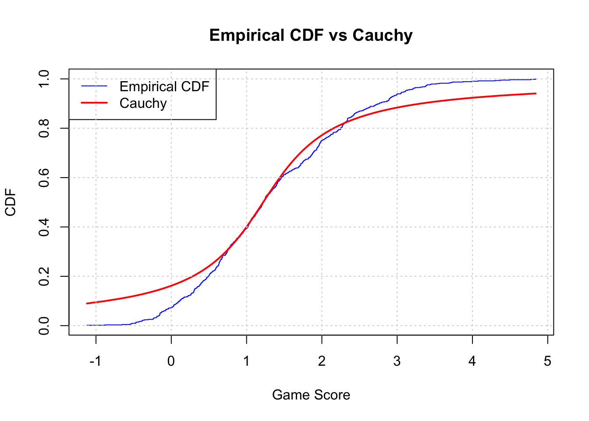
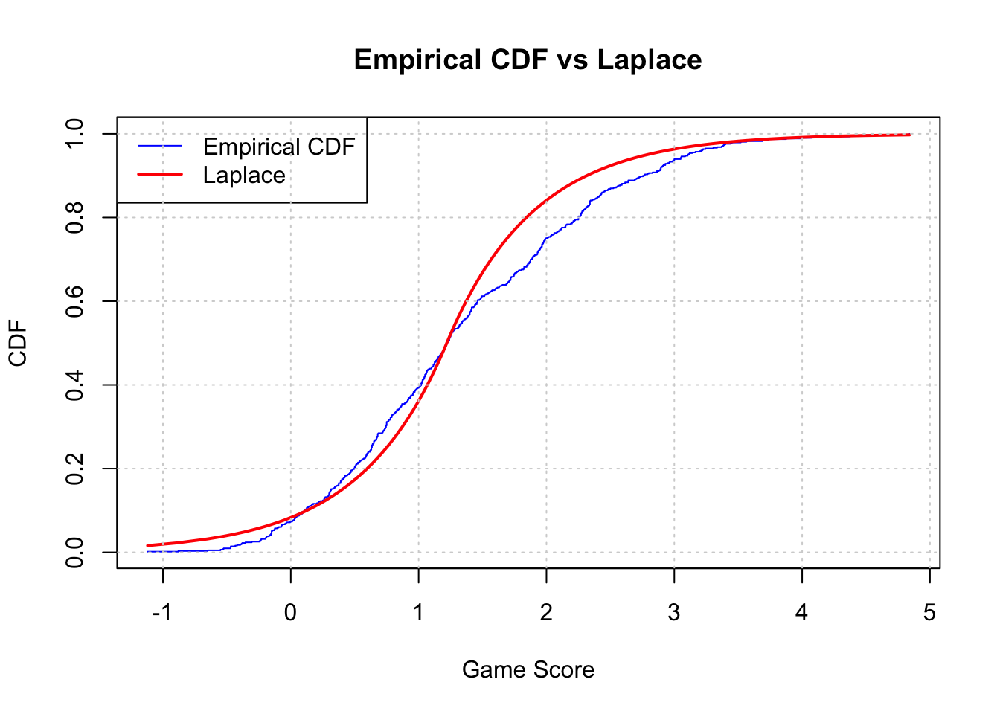
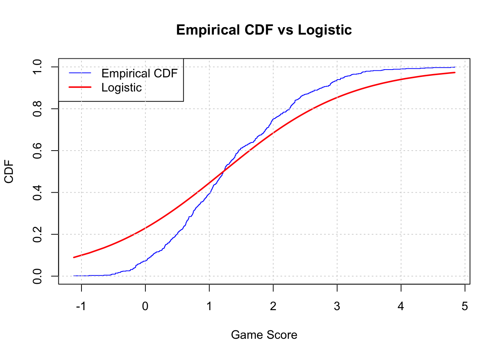

url = "https://moneypuck.com/moneypuck/playerData/careers/gameByGame/regular/skaters/8479318.csv"
df <- read.csv(url)
# head(df)Auston Matthews - Game Score
Import dataset
Read the data
# install.packages("psych")
library(psych)
# describe(df)Data cleaning
# install.packages("dplyr")
# install.packages("tidyr")
library(dplyr)
Attaching package: 'dplyr'The following objects are masked from 'package:stats':
filter, lagThe following objects are masked from 'package:base':
intersect, setdiff, setequal, unionlibrary(tidyr)
index_cols <- c("playerId", "season", "name", "gameId", "playerTeam",
"opposingTeam", "home_or_away", "gameDate", "position")
pivot_col <- "situation"
value_cols <- setdiff(colnames(df), c(index_cols, pivot_col))
df <- df %>%
pivot_wider(
id_cols = all_of(index_cols),
names_from = all_of(pivot_col),
values_from = all_of(value_cols),
values_fn = list
)
df <- df %>%
mutate(across(everything(), ~ if(is.list(.)) sapply(., `[`, 1) else .))
df <- df %>%
rename(gameScore = gameScore_all)Univariate Analysis
data<-df$gameScore
summary(data) Min. 1st Qu. Median Mean 3rd Qu. Max.
-1.120 0.635 1.220 1.353 1.995 4.840 # install.packages("moments")
library(moments)
cat("Variance: \t\t", var(df$gameScore), "\n")Variance: 1.008047 cat("Standard deviation\t", sd(df$gameScore), "\n")Standard deviation 1.004016 cat("Skewness: \t\t", skewness(df$gameScore), "\n")Skewness: 0.4726344 cat("Kurtosis: \t\t", kurtosis(df$gameScore)+3, "\n")Kurtosis: 5.99751 Grouped Frequency Table
min <- floor(min(df$gameScore))
max <- ceiling(max(df$gameScore))
num_bins = ceiling(sqrt(nrow(df))) # square root rule
breaks <- seq(min, max+1, length.out=num_bins)
df$gameScore_cat <- cut(df$gameScore, breaks=breaks, right=FALSE)
freq <- table(df$gameScore_cat)
barplot(freq, main = "Grouped Frequency Table",
xlab = "Game Score", ylab = "Number of games", col="skyblue")
grid()
Cumulative Distributive Function
# install.packages("ggplot2")
library(ggplot2)
Attaching package: 'ggplot2'The following objects are masked from 'package:psych':
%+%, alphacdf_fun <- ecdf(df$gameScore)
cdf_values <- cdf_fun(df$gameScore)
ggplot(df, aes(x=gameScore)) +
stat_ecdf(geom="step") +
labs(title="Game Score - Empirical CDF", x ="Game Score", y ="CDF")
Probability Density Function
library(ggplot2)
ggplot(df, aes(x=gameScore)) +
geom_density(fill="lightblue", color="blue") +
labs(title="Kernel Density Estimate", x="gameScore", y="Density")
Modeling Distribution
cdf_emp <- ecdf(df$gameScore)
x_vals <- sort(df$gameScore)
cdf_norm <- pnorm(x_vals, mean=mean(df$gameScore), sd=sd(df$gameScore))
plot(x_vals, cdf_emp(x_vals), type="s", col="blue", main="Empirical CDF vs Normal",
xlab="Game Score", ylab="CDF")
lines(x_vals, cdf_norm, col="red", lwd=2)
legend("topleft", legend=c("Empirical CDF","Normal"), col=c("blue","red"), lwd=c(1,2))
grid()
shapiro.test(df$gameScore)
Shapiro-Wilk normality test
data: df$gameScore
W = 0.98313, p-value = 1.184e-06# install.packages("nortest")
library(nortest)
ad.test(df$gameScore)
Anderson-Darling normality test
data: df$gameScore
A = 2.8039, p-value = 4.627e-07library(nortest)
lillie.test(df$gameScore)
Lilliefors (Kolmogorov-Smirnov) normality test
data: df$gameScore
D = 0.063201, p-value = 2.944e-06cvm.test(df$gameScore)
Cramer-von Mises normality test
data: df$gameScore
W = 0.49514, p-value = 3.033e-06cdf_emp <- ecdf(df$gameScore)
x_vals <- sort(df$gameScore)
loc <- median(df$gameScore)
sc <- IQR(df$gameScore)/2
cdf_cauchy <- pcauchy(x_vals, location = loc, scale = sc)
plot(x_vals, cdf_emp(x_vals), type="s", col="blue", main="Empirical CDF vs Cauchy",
xlab="Game Score", ylab="CDF")
lines(x_vals, cdf_cauchy, col="red", lwd=2)
legend("topleft", legend=c("Empirical CDF","Cauchy"), col=c("blue","red"), lwd=c(1,2))
grid()
# install.packages("extraDistr")
library(extraDistr)
cdf_emp <- ecdf(df$gameScore)
x_vals <- sort(df$gameScore)
loc <- median(df$gameScore)
sc <- IQR(df$gameScore)/2
cdf_laplace <- plaplace(x_vals, m=loc, s=sc)
plot(x_vals, cdf_emp(x_vals), type="s", col="blue", main="Empirical CDF vs Laplace",
xlab="Game Score", ylab="CDF")
lines(x_vals, cdf_laplace, col="red", lwd=2)
legend("topleft", legend=c("Empirical CDF","Laplace"), col=c("blue","red"), lwd=c(1,2))
grid()
cdf_emp <- ecdf(df$gameScore)
x_vals <- sort(df$gameScore)
loc <- median(df$gameScore)
sc <- IQR(df$gameScore)/1.349
cdf_logistic <- plogis(x_vals, location=loc, scale=sc)
plot(x_vals, cdf_emp(x_vals), type="s", col="blue", main="Empirical CDF vs Logistic",
xlab="Game Score", ylab="CDF")
lines(x_vals, cdf_logistic, col="red", lwd=2)
legend("topleft", legend=c("Empirical CDF","Logistic"), col=c("blue","red"), lwd=c(1,2))
grid()